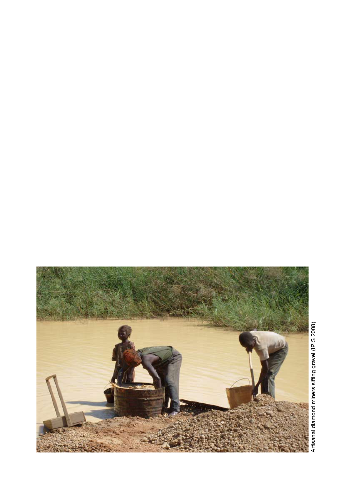

LACCEG
LRA
MICOPAX
MLCJ
MONUC
OCHA
PARPAF
PDRN
PKM
RPG
SEBOCA
SPLA
SSR
UDF
UFDR
UFR
UN
UNDP
UNDSS
UNHCR
UNSC
University of Bangui – Department of Geography - Laboratory of Climatology,
Cartography and Geographical Studies (Laboratoire de Climatologie, de
Cartographie et d’Etudes Géographiques)
Lord’s Resistance Army
Mission for the Consolidation of Peace in the Central African Republic
(Mission de consolidation de la paix en Centrafrique)
Movement of the Central African Liberators for Justice (Mouvement des
Libérateurs Centrafricains pour la Justice)
United Nations Mission in the Democratic Republic of the Congo (Mission de
l’Organisation des Nations Unies en République Démocratique du Congo)
(United Nations) Office for the Coordination of Humanitarian Affairs
Support Project to the Realisation of Forest Arrangement Plans, Bangui
(Projet d’Appui à la Réalisation de Plans d’Aménagement Forestier)
Northern Region Development Programme (Programme de Développement
de la Région Nord)
Kalashnikov’s Machine gun Modernized (Pulemet Kalashnikova
Modernizirovanniy)
Rocket-propelled grenade (Ruchnoy Protivotankoviy Granatomyot)
Société d’Exploitation des Bois de Centrafrique
Sudan People’s Liberation Army
Security Sector Reform
Ugandan Defence Forces
Union of the Democratic Forces for Unity (Union des Forces Démocratiques
pour le Rassemblement)
Union of the Republican Forces (Union des Forces Républicaines)
United Nations
United Nations Development Programme
United Nations Department of Safety and Security
Office of the United Nations High Commissioner for Refugees
United Nations Security Council
46